Personagens Masculinos da Cidade de Morretes - PR
PERSONAGEM
HOMENAGEADO |
CÂMARA MUNICIPAL
DE MORRETES |
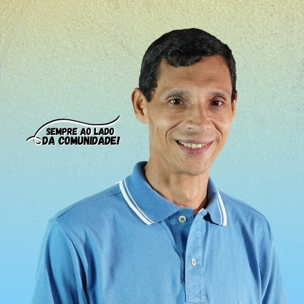 Vereador Isael Poeta, batalhador incansável pelas comunidades de Morretes. O seu falecimento transtornou emotivamente a todos que o conheciam, e para que o seu sonho de criar um Museu para Morretes não tenha sido em vão, é que está sendo continuado por aquele que com ele trabalhava em parceria: Vereador Fabiano Cit. |
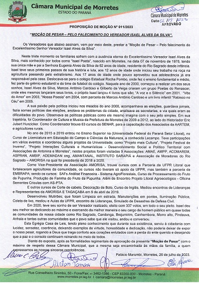 |
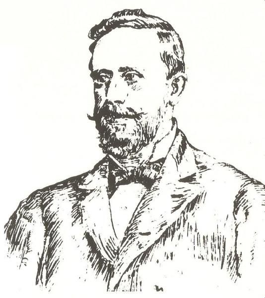 |
ANTONIO ALVES DE ARAÚJO 1818 - 6 de novembro: Nasce em Morretes. Depois dos estudos primários realizados em sua cidade natal, completou sua instrução geral no Rio de Janeiro. Desejoso de aperfeiçoar sua educação, visitou países da Europa e da Ásia. Assim sendo, mesmo não sendo formado, recebeu aprimorada educação e instrução. Casou com Maria Luiza de Araújo. Foi Deputado Provincial, tendo ocupado a Presidência em várias legislaturas. Dedicou-se sempre, a indústria ervateira e ao comércio, em Curitiba, na Rua Brigadeiro Franco. Por seu trabalho e lealdade, recebeu as comendas da Rosa e de Cristo. Nesta época estava casado com Francisca Pereira Correia, pois viuvara da primeira esposa. Teve os seguintes filhos: Hipólito Correia Alves de Araújo, Moiséis Correia Alves de Araújo e Maria Rosa de Araújo. Foi Vice-Presidente da Província do Paraná, por oito anos, de 1864 a 1865; 1868 a 1869 e de 1880 a 1883. Numa das vezes que assumiu a Presidência da Província, em substituição ao Presidente Dr. Carlos de Carvalho, a situação era de instabilidade. O comércio negava-se a pagar o exorbitante imposto ( do vintém ) sobre as vendas. A missão do Comendador Araújo era demais melindrosa em virtude de governar provisoriamente. Mesmo como elemento acatado e de prestígio na classe revoltada e político de grandes responsabilidades, não pode, por si, resolver a complicada questão, convocando então a Assembléia Provincial para tratar de tão rumoroso caso. Em seguida as suas viagenes para a Europa, havendo deixado suas propriedades entregues ao seu cunhado, Fanor Cumplido, encontrou-se ao voltar, inteiramente sem dinheiro. Teve que vender várias de suas propriedades e bens, para saldar sua dívida. Depois de haver sido muito rico, estava bem abalada a sua fortuna, quando do seu falecimento. Faleceu na cidade de Palmeira, em 1888.
|
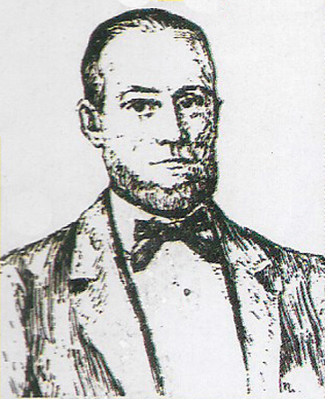 |
ANTONIO RICARDO DOS SANTOS 1819 - 22 de setembro: Nasce em Morretes. Conhecido como Comendador Dodoca. Casou com Cordula Martins dos Santos. Dedicou-se com o pai à indústria ervateira e ao alto comércio. Fundou em Curitiba o Engenho Iguaçu, no Barigui do Batel. Em Morretes, onde foi Vereador, instalou, com José Celestino de Oliveira e Antonio Gonçalves do Nascimento, uma das primeiras usinas de açucar do Sul do Brasil, o Engenho Central, tido na época como o mais completo e moderno. Foi Deputado Provincial em diversas legislaturas e Vice-Presidente da Província, (exercendo o cargo de Presidente, de 29-12-1887 a 9-2-1888). Presidiu a inauguração da Companhia Carris Curitibana (bondes). A linha mais longa era a do Batel, que custava Rs $200 (duzentos réis). Em 1878 transferiu-se para Curitiba, onde construiu sua residência à Rua 15 de Novembro, onde está construído o Edifício Azulay, que pelo seu conforto e luxo só a igualava a do Barão do Cerro Azul. A Colôniva Nova Itália, foi fundada em terras doadas pelo Comendador Dodoca, em 1881. Foi agraciado pelo Imperador D. Pedro II, com o título de Comendador da Ordem da Rosa. Respeitado e acatado nos meios industriais, comerciais e sociais, era, estimado e representava padrão de virtudes acrisoladas e de conduta libada. Deixando a Presidência da Província em 9 de fevereiro, apresentou relatório sobre suas atividades, do qual destacamos o seguinte: "Está no alcance de todos que a instrução pública, principalmente a primária, exige uma reforma, senão radical, deve ao menos ser alterada introduzindo-se melhoramentos necessários e capazes de preencher as lacunas, que a cada momento se encontram no regulamento de 1876. A Província do Paraná que conta com tantas instituições de ensino, não deve oferecer o espetáculo repugnante da distribuição de cadeiras de ensino a pessoas que fogem a prova de habilitação e recorrem às leis de favor e exceção, que se não justificam por conveniência pública, causando grave prejuízo para a instrução pública." Faleceu em Curitiba, a 17 de novembro de 1888. No seu funeral foram prestadas honras de Chefe de Estado, tendo sido extraordinariamente concorrido.
|
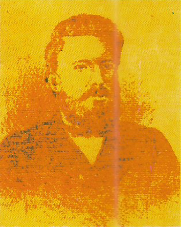 |
JOÃO NEGRÃO 1833 - 19 de dezembro: Nasce João de Souza Dias Negrão (III) no São João da Graciosa, em Morretes. Como a maioria dos homens de seu tempo, só tinha o curso primário. Tudo quanto conquistou foi à custa de grande força de vontade. Casado com Maria Francisca da Luz Negrão. Filhos: Francisco de Paula Dias Negrão; João, falecido em criança; João de Souza Dias Negrão (IV), falecido em criança; Tenente José de Souza Dias Negrão; Octávio, falecido em criança; Álvaro, falecido em criança; Antonio; Maria Francisca da Luz Negrão Filha (Nenê); Eugênio; Maria; Esther da Luz Negrão. Exerceu vários empregos públicos nos quais teve a ocasião de prestar inestimáveis serviços ao Estado e ao País: Escrivão do Juiz Municipal de Curitiba; 2ª Tabelião de Notas de Curitiba; Administrador das Agências de Itararé; Coletor da Vila do Príncipe, hoje Lapa; Administrador Interino da Barreira do Rio do Pinto, em Morretes; Oficial da Secretaria de Governo; Escrivão da Coletoria da Capital; Secretário da Repartição Estatística; Adido a Secretaria de Governo; Escrivão do Registro de Rio Negro; Escrivão da Barreira da Graciosa, cargo em que foi efetivado até aposentar-se em 1877. Depois de aposentado exerceu o cargo de Inspetor Escolar no Porto de Cima, no qual prestou muitos serviços a causa da instrução. Foi também Deputado a Assembléia Provincial. Foi membro preeminente do Partido Conservador. Quando exerceu o mandato de Deputado a Assembléia Provincial muito lutou pela difusão do ensino primário. Faleceu em 2 de abril de 1887, sendo a sua morte muito sentida, tal era a consideração e alta estima de que gozava entre seus compatriotas. |
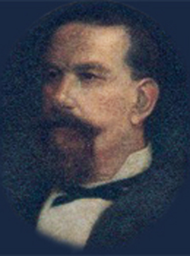 |
MANOEL ALVES DE ARAÚJO 1836 - 11 de março: Nasce em Morretes Manoel alves de Araújo, o Conselheiro Araújo. O estudo primário completou a ouvir o murmúrio das cristalinas águas do Nhundiaquara, os preparatórios no Colégio Freese, em Nova Friburgo e o superior em São Paulo. Bacharelou-se em Ciências Sociais e Jurídicas, pela Academia de São Paulo. Deputado e Presidente da Assembléia Provincial do Paraná em muitas legislaturas, bem como Deputado Geral pela mesma província, por muitos anos. Ministro e Secretário de Estado dos Negócios da Agricultura, Comércio e Obras Públicas deu grande desenvolvimento à navegação entre os portos das Províncias e a contrução de uma estrada de rodagem ligando os Campos Gerais com os de Guarapuava. Incrementou as redes telegráficas, contratou com a Companhia Chemins de Fer Brésileins, o prolongamento da estrada de ferro de Curitiba até as margens do Rio Paraná e mandou introduzir na província um rebanho de ovelhas importado de Buenos Aires. Interferiu para a construção da estrada Palmas a Porto União, bem como foi restabelecida a navegação nos Rios Negro e Iguaçu. Fez eletrificar os dois portos da Província. A estrada de rodagem da Lapa foi prolongada até Rio Negro e a de Castro até Jaguariaiva. Recebeu a Comenda da Ordem da Rosa e teve o título honofírico de Conselheiro do Imperador. Presidiu também a Província de Pernambuco. Vice-Presidente da Província do Paraná, em 1865, assumiu interinamente o governo. Fundou e dirigu o jornal "O Paraná". Casou-se com Maria Colecta dos Santos Araújo. Faleceu o eminente morretense em 11 de dezembro de 1910, no Rio de Janeiro. |
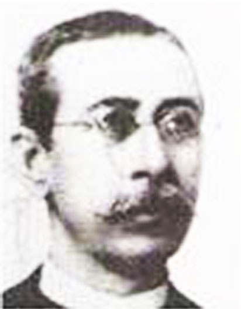 |
JOSÉ GONSALVES DE MORAES 1849 - 15 de janeiro: Nasce em Morretes. Fez o curso primário em sua cidade e o de Humanidades em Paranaguá. Começa cedo a trabalhar. Já aos 18 anos é nomeado professor em sua cidasde natal. Torna-se sócio de uma casa comercial com um de seus irmãos. Lecionou Português, Francês e Latim em Curitiba. Teve também um internato. Publicou o livro de poesias "Sempre Vivas", em 1874. Inaugura o primeiro prelo da cidade, sendo o compositor e o impressor do primeiro jornal morretense e, com alguns companheiros, cria diversas sociedades literárias e sociais, como Amor ao Estudo, Clube Alfa e Filodramática Morretense. Ao adoecer, em 1904, tornou ao recanto natal. Para aqui se dirigiu na qualidade de secretário e tesoureiro da Câmara Municipal. Manteve-se nessa oocupação até seu falecimento. Foi o criador do "Almanaque Paranaense", tendo organizado os quatro primeiros, onde inseriu crônicas, poesias e contos humorísticos de sua autoria. Cegando nos últimos anos de sua vida, continuou a fazer poesias cheias de vida, que pareciam saídas de uma alma sonhadora de vinte anos. Não podendo escrever, ditava os seus sonetos a seu filho Aguilar. Deixou sempre transparecer em suas rimas a vivacidade e a ternura dos seus vinte anos. Revestem-se, geralmente, de férvido sentimentalismo e são consideradas, todas, verdadeiras e belas jóias literárias. Casou com Francisca dos Santos, teve o filho Américo Vespúcio de Moraes. |
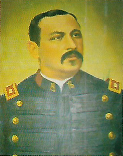 |
IGNÁCIO GOMES DA COSTA 1857 - 30 de setembro: Nasce em Morretes, no Porto de Cima. O Major Ignácio estudou as primeiras letras com o Professor José Maria de Castro Britto, no recanto natal. O curso secundário no internato do Professor Joaquim Serapião Nascimento em Curitiba. Ingressou no Exército como Praça eem 1892 era Alferes. No ano seguinte foi nomeado Fiscal do Regimento de Segurança, comissionado no posto de Major, por indicação do Cel Dulcídio. Fez o curso superior na Escola Militar da Praia Vermelha e de Campo Grande, onde concluiu os cursos de: Cavalaria, Infantaria e Tiro. Participou ativamente nos combates que ficaram conhecidos como "Cerco da Lapa", assinando, junto com outros militares, a "Ata de Capitulação da Praça da Lapa" em 11 de fevereiro de 1894. Portou-se sempre como digno militar. Da Revolução Federalista, diz a história: "Foi o sítio se estreitando, com alternativas de avanços e recuos, com extraordinárias provas de bravura dos defensores, destacando-se entre eles, o Major Ignácio Gomes da Costa, o Capitão Clementino Paraná e outros. Esgotados os recursos da defesa, no dia 11 de fevereiro de 1894, veio à capitulação, perdendo-se a Praça Legendária, mas ganhando-seo tempo necessário para que o governo legal organizasse a defensiva com a qual venceu os insurretos. Do Regimento de Segurança são citados os seus Oficiais: Comandante Cel. Cândido Dulcídio Pereira, Major Ignácio Gomes da Costa, Cap. Clementino Paraná, José Olintho e Praxedes Borba, Ten. Carvalho Chaves e Adalberto de Menezes, os Alferes Antônio Gomes Ferreira, Manoel Francisco de Araújo e Américo Vidal." Com a morte do Cel. Dulcídio, o Cap. Ignácio assumiu interinamente o Comando da Polícia Militar. Nomeado pelo Dr. Vicente Machado, Governador em exercício, Comandante Geral da Polícia Militar do Paraná. No seu comando foi adquirido o terreno onde está hoje o Quartel do Comando Geral. Faleceu este bravo morretense a 3 de outubro de 1930, em Curitiba. |
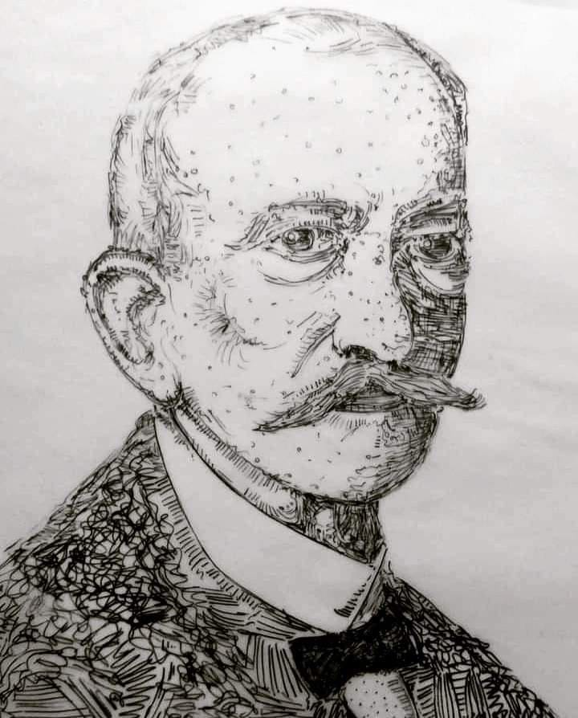 |
JOSÉ FRANCISCO DA ROCHA POMBO 1857 - 4 de dezembro: Nasce no Anhaia, Morretes - PR. Nasceu em um dos subúrbios mais pitorescos de Morretes, o Anhaia, no dia 4 de dezembro de 1857, teve uma infância tranquila como qualquer criança da sua idade, ora preocupado com os folguedos infantis, ora com seus trabalhos escolares, já então entre excelentes professores onde recebe os conhecimentos que lhe permitram assumir, aos 18 anos, a regência de uma classe de ensino primário na terra em que nascera. Posteriormente o exercício do magistério que sempre soube conduzir com compreensão e seriedade, levou-o a habilitante carreira de letras, no jornalismo acertou sua vida literária. |
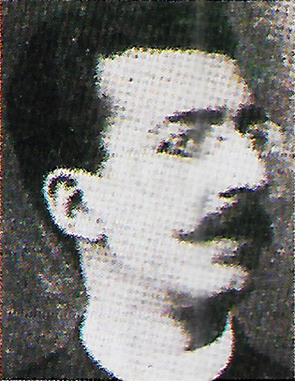 |
RICARDO PEREIRA DE LEMOS 1871 - 15 de maio: Nasce em Morretes - PR. Concluindo os cursos: primário e humanidades, decidiu-se pela burocracia. Foi funcionário público estadual. Poeta essencialmente humorista, dotado de correto e elegante estilo. Suas colaborações se encontram espalhadas em jornais e revistas curitibanas: O Cenáculo, o Sapo, Azul, Diário da Tarde, Cartão Postal, Stellario, A Notícia, O Olho da Rua, Clube Curitibano, A Rosa, A Pena, Breviário, Comércio do Paraná, Senhorita, O Dia, Prata da Casa e o Itiberê (de Paranaguá). Tímido e retraído. sempre fugindo dos aplausos, versejando com correção, acobertado em vários pseudôminos como: "Garrone", "F. A. Brício" e "Alberto Cadaveira". Excelente cultor de Édipo, compositor e decifrador de charadas, logogrifos e enigmas, filatelista, colecionava com carinho pelo menos uma crônica ou uma poesia de cada confrade. Publicou em 1898 um livro com quarenta euma peças de versos humorísticos: "Ventarolas", por sinal o primeiro livro de versos jocosos, dado a publicidade no Paraná. Estávamos em abril e o "Sá Pinho" (pseudônimo de Leocádio Correia), na revista "O Sapo", espalhara a notícia de que Ricardo andava a distribuir exemplares de sua obra em pleno inverno. "João da Tapitanga", ao divisar na vitrine da Livraria Econômica o volume em questão, improvisa uma ferina quadra Alexandrina. Ao que "Zé Ferino, pseudônimo com que se escondia o poeta Alfredo Coelho vem em defesa do nosso biografado, saindo-se com esta quadra: "Não é só no estio que os leques Ricardo de Lemos a todos cativava pela sua irradiante simpatia. |
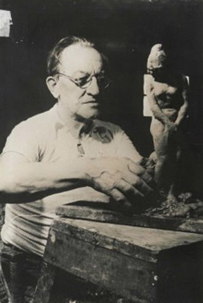 |
JOÃO TURIN 1875 - 21 de setembro: João Zanin Turin. Nasce no Porto de Cima, em Morretes. "Aos pés do Marumbi", diria ele mais tarde, motivo de orgulho do artista que sempre buscou e encontrou na natureza a força de sua expressão criadora e a matéria prima, origem de toda a sua criação artistica. Após os primeiros estudos em sua terra natal, em 1906 viajou para a Bélgica, onde se matriculou na Academia de Bruxelas, para estudar escultura. Nos cinco anos que ali estudou, conquistou primeiros e segundos prêmios do curso. No decorrer do quarto ano conquistou vários deles. Por esse motivo o diretor da Escola de Belas Artes cedeu-lhe um atelier na própria escola, onde Turin executou a escultura "O Exílio", figura de dois metros de altura. Obteve menção honrosa ao exp\\õ-la no Salão de Paris. Esta estátua está hoje na Municipalidade de Bruxelas. Em 1913, expôs nesse mesmo salão outros dois trabalhos: "O Fogo Sagrado", com dois metros de altura e o "Busto do Barão do Rio Branco". No ano seguinte exibiu as maquetes de "Rio Branco", "Olavo Bilac" e o busto do Diretor da Ecole dês Hautes Estudes, Dr. Marc Auliff. Residindo em Paris durante a guerra de 1914, Turin viu-se, premido pelas circunstâncias, forçado a exercer funções fora da sua profissão. Finda a conflagração, realizou belo baixo relevo em pedra, - "La Pietá", de grandes dimensões, para a igreja da Normandia, França. Novamente expôs no Salão de Paris uma maquete do "Dr. Epitácio Pessoa", então Presidente da República, e outra do "Dr. Gastão d'Argollo", ambas no tamanho natural, a "Figura de Cão de Caça" e a estátua de "Tiradentes" - Mártir". Em colaboração com o também escultor João Zaco Paraná, executou em 1922 os bustos em bronze, dos poetas paranaenses "Emiliano Perneta", "Emílio de Menezes" e "Domingos Nascimento", que embelezam o aprazível recanto da cidade de Curitiba, a Praça General Ozório. Também de sua autoria é a estátua de "Tiradentes", na Praça que leva o nome de nosso mártir maior. É muito grande a obra executada por Turin. Umas estão assinadas, outras não, por terem sido feitas em parceria com artistas franceses. Faleceu João Zanin Turin em junho de 1949. |
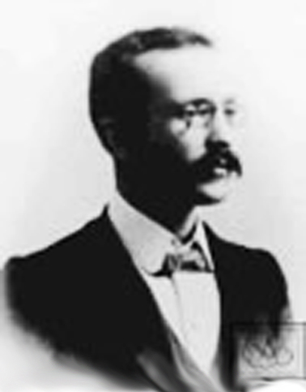 |
MANOEL AZEVEDO DA SILVEIRA NETTO 1875 - 4 de novembro: Nasce em Morretes - PR. Passou a infância nacidade natal e teve a oportunidade de assistir a inauguração do Engenho Central. Em Morretes estudou com o Professor Libero Teixeira Bragam muda para Curitiba em 1879. Classificado em concurso, foi nomeado praticante da Tesouraria da Fazenda Federal em 27 de maio de 1891. Casou em 28 de janeiro de 1893, com Amélia Alcântara da Silveira, nascida em 5 de agosto de 1875. Por algum tempo dedicou-se ao desenho litográfico. Em 11 de novembro de 1904 foi designado juntamente com Benedicto Nicolau dos Santos, escritor e musicista de mérito, para instalar a Mesa de Rendas da Foz do Iguaçu, então criada, o que se realizou a 19 de abril de 1905. Em 1910 foi nomeado inspetor da Alfândega de Paranguá, por Decreto de 28 de dezembro. Em sua gestão mudou a alfândega para o novo edifício no Porto Dom Pedro II, há muito construido e quase abandonado, tirando-a do velho e infecto convento à margem do Itiberê e cuja construção datava de 1740, sendo a repartoção nele instalada em 1827. Em 1913 foi, juntamente com o escriturário da mesma alfândega, o morretense Francisco de Paula Dias Negrão, designado para instalar e dirigir o serviço de encomendas postais na Delegacia Fiscal do Paraná, o que o fez a 2 de agosto desse ano. Em 1914, lança o livro "Do Guairá aos Saltos do Iguaçu", impresso por conta da Secretaria de Agricultura do Estado, com um desenho original de seu irmão Aureliano da Silveira. Silveira Netto é autor da letra do Hino Morretense, sendo seus versos musicados por Luiz da Silva Bastos, também de Morretes. Escreveu o livro "Margens do Nhundiaquara". Convidado a visitar Morretes, aqui esteve no dia 15 de março de 1933, sendo recebido festivamente, ouviu ao chegar, o Hino Morretense, cantado por senhorias, sendo após, saudado por diversos oradores. Faleceu no Rio de Janeiro em 19 de dezembro de 1942, tendo seus restos mortais transladados para Morretes, por ocasião das comemorações de seu centenário de nascimento. |
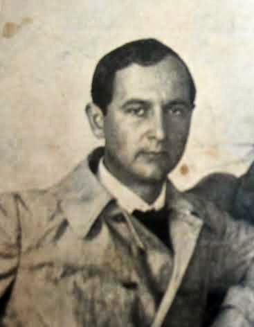 |
LANGE DE MORRETES 1892 - 5 de maio: Nasce em Morretes Frederico Lange de Morrete. Passou a infância a admirar a " terra dos líriso bravos", onde estudou as letras primárias. Ainda adolescente seu pai trouxe aMorretes o mestre Alfredo Andersen a fim de ensinar pintura. Estudou na Europa, pois o seu mestre julgava-o o melhor pintor paranaense. Primeiro em Leipzig, Alemanha, estudou pintura. A seguir cursou a Escola Superior de Belas Artes de Munique, também na Alemanha. Adotou oficialmente o nome de sua cidade natal, pois na Alemanha o sobrenome Lange é comum. Retornando à Pátria dez anos depois, se dedicou a arte pictória e a ciência. Ao lado de Turin e Ghelfi, lutou para que o Paraná tivesse um estilo artístico próprio, verdadeiramente paranista. Lecionou na Escola de Belas Artes do Paraná. Pintou mais de quinhentas telas, com exposições no Brasil e na Alemanha. Dentre os prêmios recebidos destaca-se a medalha de ouro, galardão póstumo no Salão Paranaense de Belas Artes em 1954. Na ciência, estudou zoologia, trabalhando no Museu Paulista e, mais tarde, para lecionar na Faculdade de Filosofia, Ciências e Letras da USP, em São Paulo. Os primeiros estudos e catálogos sobre moluscos da baía de Paranaguá e do litoral norte de São Paulo foram feitos por ele. Suas filhas Ruth e berta estudaram história na USP, entre 1938 e 1941, tendo sido Berta um dos expoentes em botânica no Brasil. Segundo Berta, seu pai quando professor era muito severo e correto, e dizia a suas filhas: "vocês nunca tirarão um dez comigo". "Mas, nem se a gente merecer?". Ele respondia: "Se eu der o dez que vocês merecem alguém poderá dizer que foi por proteção. Melhor vocês terem uma nota mais baixa e não ouvirem esse tipo de comentário." Faleceu em 1954. |
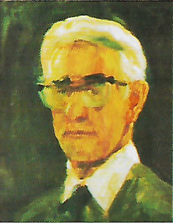 |
THEODORO DE BONA 1904 - 11 de junho: Nasce em Morretes - PR. De Bona, foi aceito como aluno de Andersen em 1922, partindo posteriormente, e 1927, para a Itália, a fim de aperfeiçoar sua pesquisa plástica e teórica. Participou de um grupo de vanguarda italiano alcunhado de "Cà Pesaro", dos Salões dos Artistas Venezianos de 1928 a 1935 e também da disputada Bienal de Veneza, no ano de 1930. Considera-se que a fase mais criativa do artista se deu na alvorada dos anos 40, quando demonstra, na liberdade do traço e velocidade do gesto, numa despreocupação com o resultado. De Bona, nessa fase, alcança a linguagem expressionista. Destacam-se nessa época os quadros "Cá Foscari" e "Navio Negreiro". De Bona foi diretor e professor da Escola de Música e Belas Artes do Paraná, lecionando na cadeira de "pintura de nu acadêmico". Sua estadia em Veneza foi fundamental para o amadurecimento da sua arte. Retornou ao Brasil em 1937. Até sua morte, em 1990, alcançou uma linguagem pessoal, fluente e realista, com nostálgicas cadências impressionistas. Versátil, deixou um vasto conjunto de obras, dentre as quais cintilam cenas de gênero, retratos, alegorias, nus, composições de temática histórica e murais religiosos, além de um considerável complexo de paisagens. Atualmente suas obras são objeto das mais altas cotações na bolsa de Arte. No íntimo, De Bona tinha receio de que esse tipo de comércio, estritamente relacionado ao gosto do grande público consumidor, pudesse desvalorizar seu labor colocando em risco a respeitável imagem profissional da qual então já gozava. Theodo De Bona se impôe à memória cultural paranaense pela sólida devoção à Arte, como um meio irreversível de devolver ao ser humano sua dimensão de humanidade e de poesia. Sua obra está presente - compondo, junto com outros fragmentos, essa complicada discussão sobre a existência de uma identidade regional paranaense. A obra "Via Sacra", doada à Igreja Matriz de Morretes pode ser considerada como sua obra prima. |
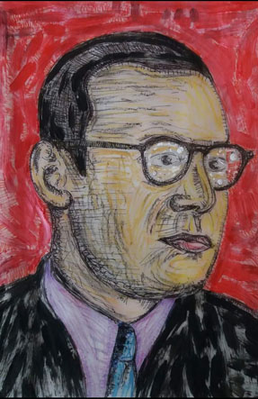 |
ODILON NEGRÃO 1908 - ?: Nasce em Morretes - PR. "Eu nasci numa pequena
freguesia no meio de caboclos sinceros e fortes. |
 |
JOÃO NICOLAU 1910 - 25 de abril: Nasce em Antonina - PR. De uma família de seis irmãos, sendo uma irmã: Maria Nicolau; veio para Morretes no ano de 1939 quando conheceu aquela que viria a ser a sua esposa: Zeli Vizini, formando uma família de sete irmãos: quatro homens e três mulheres. Conheceu o Sr. Dr. Pedro Alípio de Camargo (pai daquele que foi Senador Afonso de Camargo), convidando-o para gerenciar o açougue que havia construido e instalado sito a Rua XV de Novembro, esquina com a Rua Rômulo Pereira, tendo a sua frente, na época, o Banco Comercial do Paraná, e a sua esquerda o antigo Bar Barril; em frente, na diagonal, tem até a data atual o Grupo Escolar Miguel Schleder. Tinha o hábito familiar de desenhar sentado no chão da sala de sua casa, rodeado pelos seus filhos que ficavam apreciando a sua desenvoltura com o lápis. Dessa forma, vários deles criaram o hábito de desenhar, destancando-se João Carlos, Oneide, Ronald e principalmente Felipe Nicolau, que criou e publicou durante 5 anos, em sumplemento infantil do Jornal O Estado do Paraná, Histórias em Quadrinhos, com mais de 60 personagens. João Nicolau faleceu em 31 de maio de 1964. |
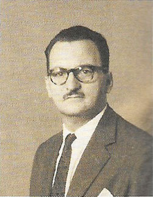 |
Marcos Luiz De Bona 1914 - 29 de abril: Nasce em Morretes - PR. Teve seis irmãos: Francisco, Santos, Theodoro, Antonio, Maria e Tereza, que o criou em virtude do falecimento prematuro de sua mãe. Marquinhos, como era chamado carinhosamente por alguns, ou Seu De Bona, por outros, era de caráter comunicativo, humanitário, batalhador, alegre. Aos 18 anos de idade começou a participar da vida intelectual da cidade, algumas vezes como colaborador e outras como líder. Em 1923, no Tiro de Guerra 70, foi Secretário e depois Presidente. Gostava de escrever e, por três anos, de 1932 a 1935, foi colaborador do jornal Morretes Esportivo e do Eco Morretense. De 1934 a 1959 foi decano dos correspondentes do Diário da Tarde, Estado do Paraná e Gazeta do Povo, sendo admitido na Academia de Letras José de Alencar, na categoria jornalista. Atuou como artista amador no Grupo Teatral Morretense de 1933 a 1935. Em julho de 1938 casou com Olga Brambilla e teve três filhos: Ligia, Marcos Luiz (falecido) e Eliane. Apreciava esportes e praticou tênis, na mocidade, tendo sido Secretário do Nhundiaquara Tênis Clube em 1942. Por muitos anos, na decada de 50, foi Secretário do Operário Futebol Clube e Presidente do Clube Literário e Recreativo 7 de Setembro. Sempre esteve engajado nas campanhas que visavam a melhorias para o Município, como na ocasião da instalação da Usina de Açucar. Marcos Luiz De Bona faleceu em 15 de junho de 1982. REFERÊNCIAS: |
 |
LYCURGO NEGRÃO 1916 - 16 de maio: Nasce em Morretes - PR. Lycurgo Negrão iniciou seus estudos no Grupo Escolar Miguel Schleder em sua cidade natal, onde cursou o ensino primário. Posteriormente, durante o ano de 1930, sua família transferiu-se para a cidade de Ponta Grossa, e Lycurgo foi matriculado no Liceu dos Campos, dirigido pela professora Judith Silveira. Nesse educandário, Negrão fez o curso preparatório para o exame de admissão ao ginásio, vindo a ingressar no então Ginásio Regente Feijó, hoje Colégio Estadual. Ali cursou o primeiro ano ginasial e, em 1932, com a transferência de sua família para Curitiba, foi matriculado no Ginásio Paranaense. Convocado para o serviço militar em 1938 foi incorporado à 1ª Companhia de Transmissões na Guarnição Militar de Curitiba e, decidido a permanecer no Exército Brasileiro, seguiu a carreira militar, galgando as graduações de Sargento e Subtenente da arma de Engenharia, chegando ao posto de 1º Tenente. Serviu no 2º Batalhão Ferroviário, sediado na cidade de Rio Negro, no Paraná, no 1º Batalhão de Engenharia, na Vila Militar, no Rio de Janeiro, no 7º Batalhão de Engenharia em Petrolina - Pernambuco, e na Comissão de Estradas de Rodagem CER/1, em Ponta Grossa, para onde foi transferido em 1948, permanecendo nessa unidade militar até sua transferência para a Reserva Remunerada do Exército em 1963. Embora nascido em família católica, conheceu a doutrina codificada por Allan Kardec, tornando-se espírita, e em 1949 ingressou na Sociedade Espírita Francisco de Assis de Amparo aos Necessitados, onde foi vice-presidente do Departamento de Juventude, hoje União da Mocidade Espírita Cristã - UMEC - e diretor do jornal Voz da Espiritualidade, periódico de divulgação doutrinária que tinha publicações mensais ao encargo dos jovens participantes da Mocidade Espírita, e que ao longo de sua trajetória contou com a colaboração de renomados espíritas como Guaracy Paraná Vieira, Vitor Ribas Carneiro, Ricardo Engel, João Hadad, Ari Schmidt, entre outros. Lycurgo Negrão desencarnou em Ponta Grossa no dia 29 de dezembro de 2012, sendo sepultado no dia 30, no cemitério Água Verde, em Curitiba. MORRETES (Porthus Mariani, pseudônimo do poeta morretense Lycurgo Negrão) |
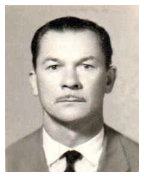 |
MIGUEL MACENO 1926 - 26 de agosto: Nasce em Rio Negro - PR. Antes de tentar a sorte como camelô em Morretes, trabalhou desde menor de idade na Pedreira Marumbi e na empresa Oscar Machado da Costa, quando residia com seu pai, que era Guarda Túnel no Marumbi. Estabeleceu-se no comércio em 1949. Teve a sua primeira loja, onde hoje está estabelecido a loja Tonet. Mais tarde adquiriu a propriedade do Sr. Elias Daher, onde era antigamente um armazém de secos e molhados. Miguel Maceno faleceu em 21 de janeiro de 1997. |
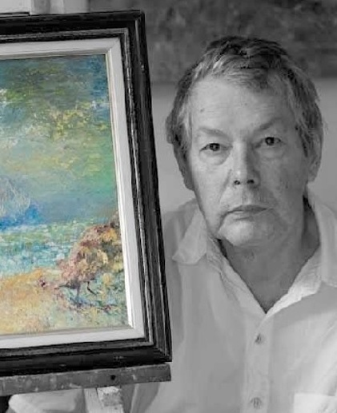 |
EROS MAICHROWICZ 1941 - 00 de (mês): Nasce em Curitiba - PR. Artista plástico autodidata, nascido em Curitiba no ano de 1941. Exposições realizadas por Eros Maichrowicz: Galeria Mirtillo Trombini, Morretes – Pr, 1995 a 2010 Eros Maichrowicz faleceu no dia 13 de dezembro de 2013. |
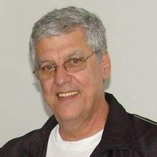 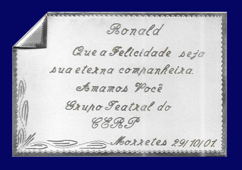 |
RONALD NICOLAU 1943 - 24 de junho: Nasce em Morretes - PR. Por Daniel Conrade: Ronald Nicolau faleceu em 23 de setembro de 2021. |
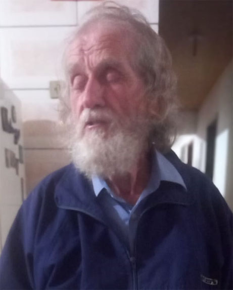 |
JOEL ALVES REDEDE 1946 - 13 de dezembro: Nasce em Guaraqueçaba - PR. Seu bisavô William Redede veio da Inglaterra. |
ORLANDO SALDANHA 1956 - 04 de setembro: Nasce em Guarapuava - PR. Teve uma infância normal de uma criança curiosa, que tudo quer tocar e conhecer, curioso e com grande segmento artístico, ensaiou seus primeiros desenhos ainda na infância usando lápis e carvão. |
|
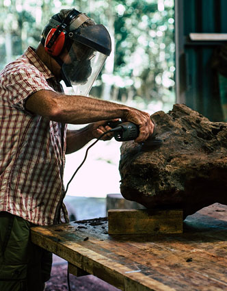 |
KEVIN PAUL ROBINSON 1958 - 03 de março: Nasce em Idaho - EUA Fui criado em uma pequena fazenda em uma área rural do oeste de Idaho, onde aprendi o valor do trabalho com meu pai e meu avô. Em uma idade precoce, eu parecia ter aptidão para projetos práticos, construir e mexer em coisas. Com o passar do tempo, ele se envolveu na fazenda ajudando na fabricação e conserto de equipamentos necessários para as atividades agrícolas. Mesmo em tenra idade, gostava de fazer pequenas coisas que suponho que poderiam ser definidas como arte ou pelo menos uma expressão de alguma criatividade. Meus anos na universidade resultaram no estudo de design mecânico e engenharia mecânica, o que contribuiu para o lado inquisitivo de meu interesse e pensamentos analíticos. Sempre tive interesse em construir coisas, em criar coisas e fazer coisas nas minhas horas vagas, fosse para construir móveis para meu próprio uso ou às vezes para outros. Durante uma parte de minha carreira posterior, morei e trabalhei em Curitiba-Brasil por alguns anos. Nos últimos 20 anos, tive mais oportunidade de expressar meu lado artístico na criação de obras, algumas das quais são utilitárias e outras funcionais, para satisfazer meu desejo de criar coisas. Tenho muita satisfação em criar e fazer coisas a partir de matérias-primas de várias origens. Tendo adquirido uma grande propriedade rural no Brasil, ficou evidente que havia abundância de matéria-prima e, ao mesmo tempo, tinha muito tempo livre para criar e produzir peças do meu trabalho. Transformando o que a natureza descartou em obras com uma vida nova.Muito do meu trabalho resulta em um toque rústico para ele, principalmente porque as matérias-primas com que estou trabalhando atualmente se prestam a essa finalidade, no entanto, este estilo combina lindamente com uma decoração contemporânea. Kevin Paul Robinson – Processos CriativosPara mim, o processo criativo começa simplesmente observando a natureza ao meu redor e os materiais disponíveis, em seguida, imaginando-a como um produto que poderia vir de algo normalmente descartado pela Natureza. Isso pode ser tão simples quanto ver uma pedra no chão ou um galho quebrado. Gosto de encontrar transformações únicas em vez das tradicionais. Ao longo dos meus anos de crescimento, aprendi e desenvolvi várias competências, incluindo trabalhar com madeira, metais, soldadura, etc. Devido ao meu interesse em trabalhar com matérias-primas, desenvolvi mais tarde competências que incluem alguns trabalhos com materiais de vidro e pedra natural. Frequentemente, mergulho em novos processos com os quais não tenho experiência, apenas para ver como uma nova técnica pode ser um benefício para o meu trabalho. Ter essa variedade de habilidades me permite produzir uma combinação e uma fusão de materiais que são exclusivos para meu processo criativo e conjunto de habilidades. Eu faço este trabalho, não por uma renda necessária, mas porque gosto muito das atividades envolvidas em ver as matérias-primas se tornarem úteis e / ou belas transformações desses materiais. Minha esperança é que as peças que eu crio e produzo tragam tanta satisfação aos meus patronos, que podem se tornar os guardiões de meu trabalho, quanto eu acumulei no processo de fazer as peças. |
|
DANIEL WILLIAN CONRADE 1983 - 07 de dezembro: Nasce em Paranaguá - PR. Daniel Willian Conrade, nasceu em 7 de dezembro de 1983 em Paranaguá, mas adotou Morretes como sua cidade, iniciou seus estudos na galeria de artes Mirtillo Trombini com a professora Isaurina Maria conhecida como Sarika. |
ABCD EFG HIJ KLM NOP 0000 - 00 de MÊS: Nasce em Morretes - PR. A |
|

Referências: FEP, Federação Espírita do Paraná. Lycurgo Negrão. Disponível em: <http://www.feparana.com.br/topico/?topico=562>. Acesso em: 25/09/2023. HUNZICKER, Eric J. Morretes - Terra de Personalidades. Folder distribuído pela Diretoria de Cultura - Secretaria de Turismo e Cultura - Prefeitura Municipal de Morretes. |